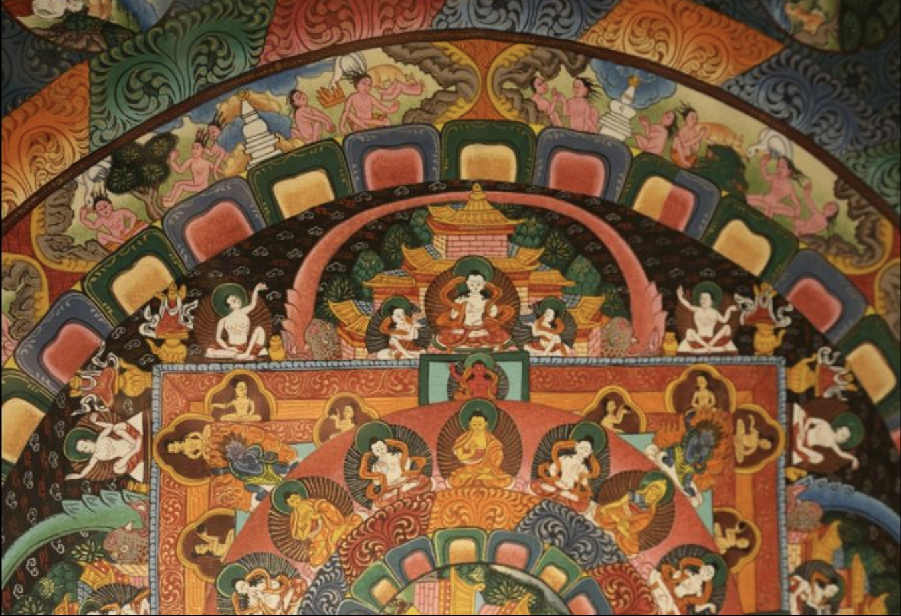
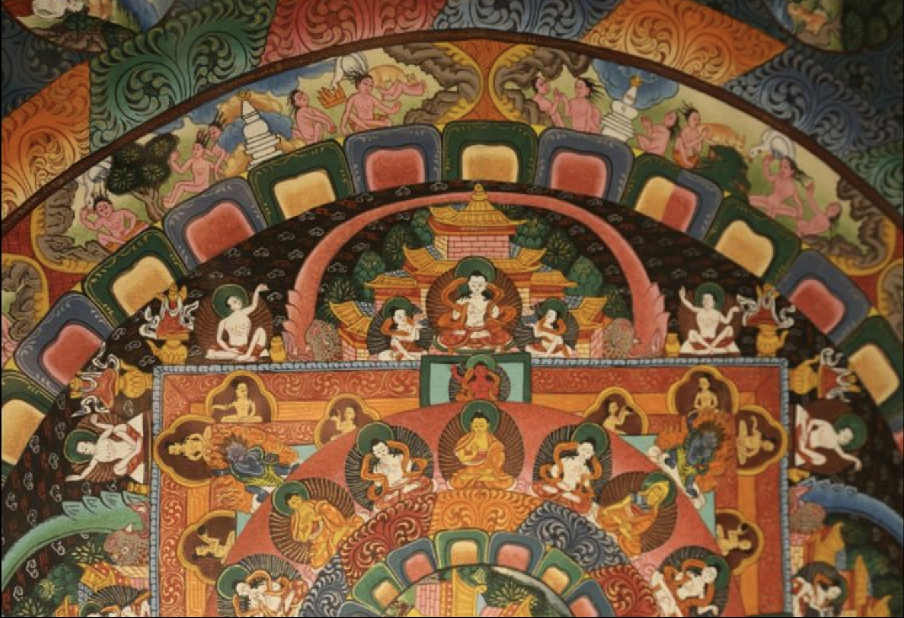
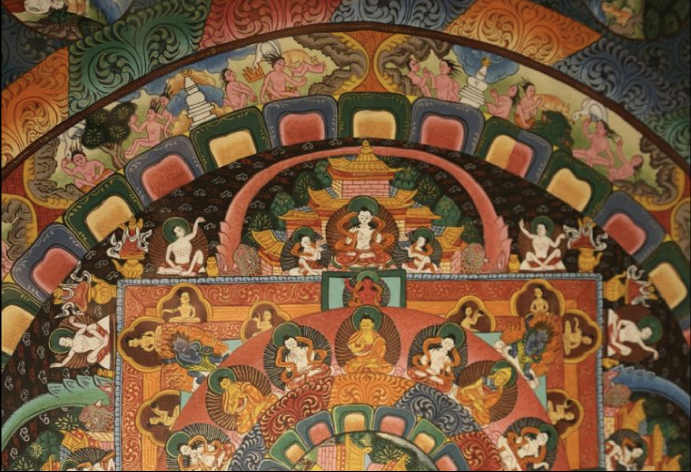
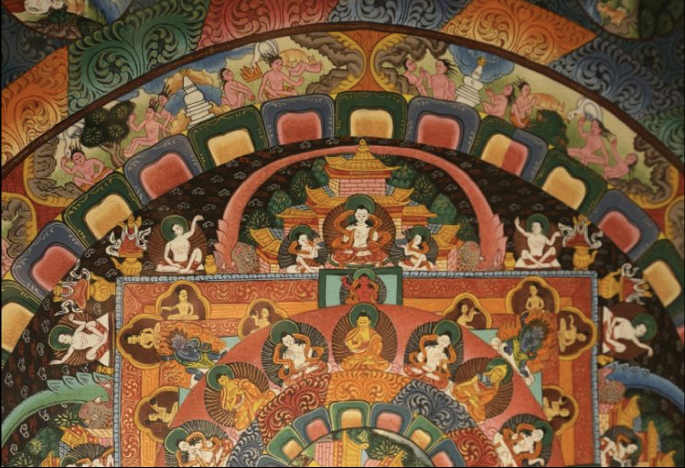

 

Central pool represents human consciousness, much like the pool at the bottom of the left panel.
populated by virgins, watched over with divine cranes, this scene illustrates a traditional esoteric understanding:
the essential (and fertile) femininity of mankind's consiousness, which is designed and intended
solely to receive the diving influences from the Heavenly Father.
Tempation ecisrs here as well, but, as is fitting for a man's innermost essence, cherries --
temptations not of the flesh, but of the soul.
Here are the last and the first groups, showing the continues descent in a counterclockwise descent into earthly influences.